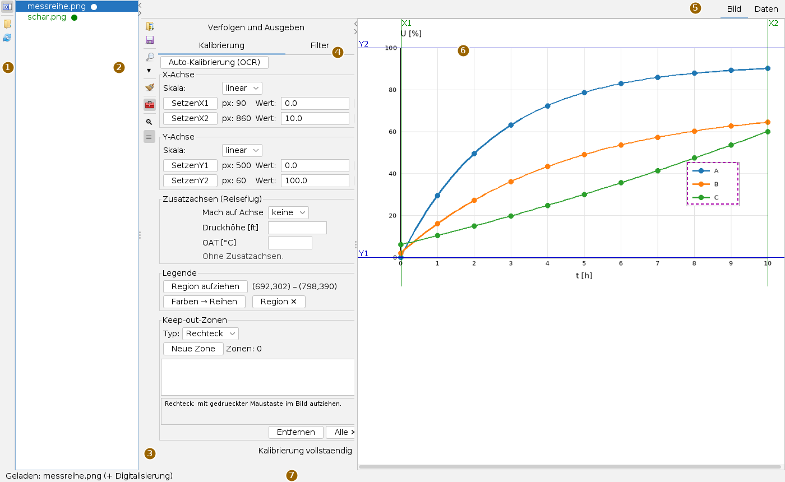
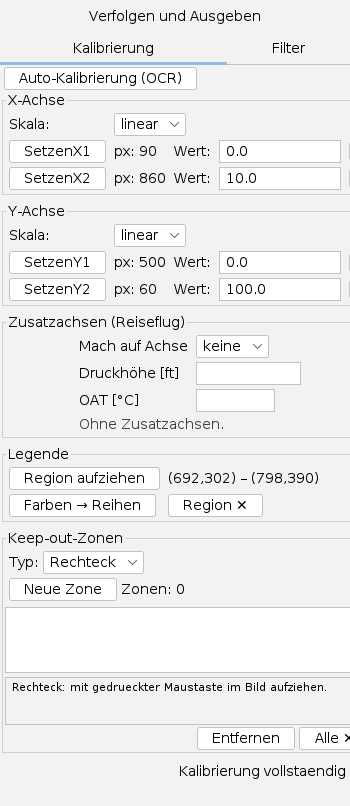
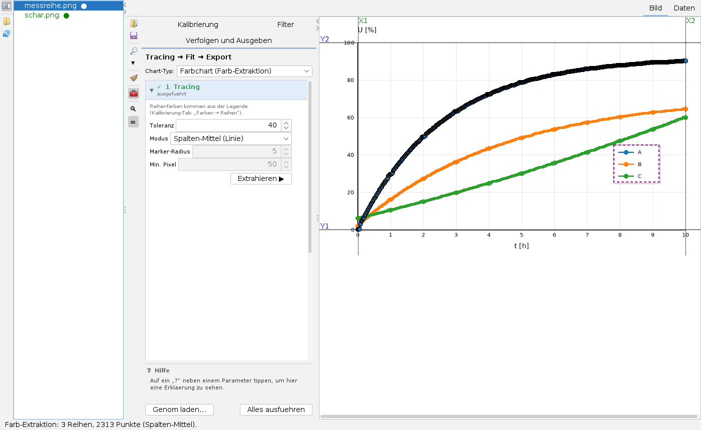
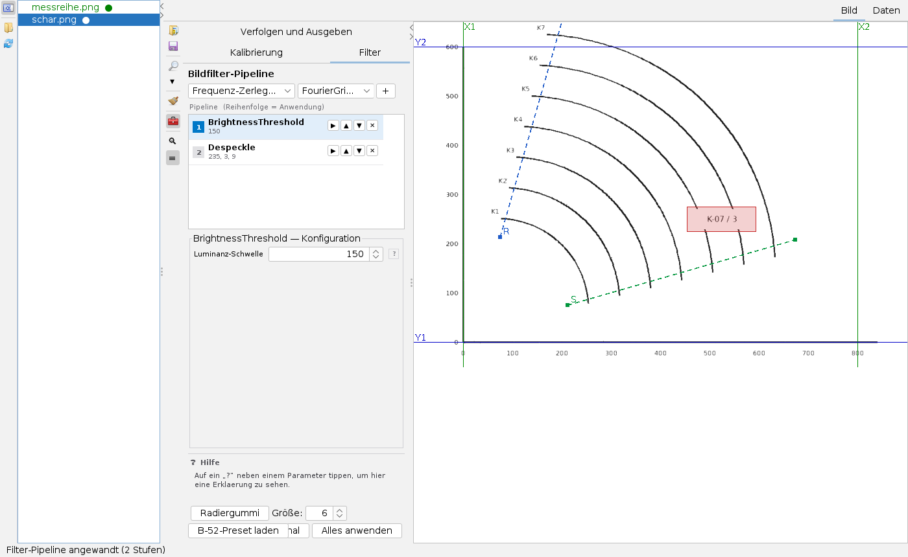
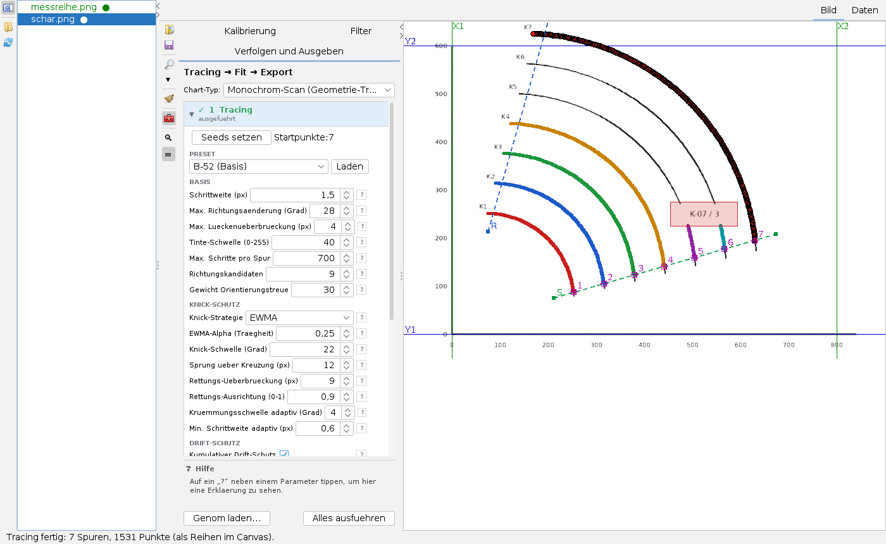
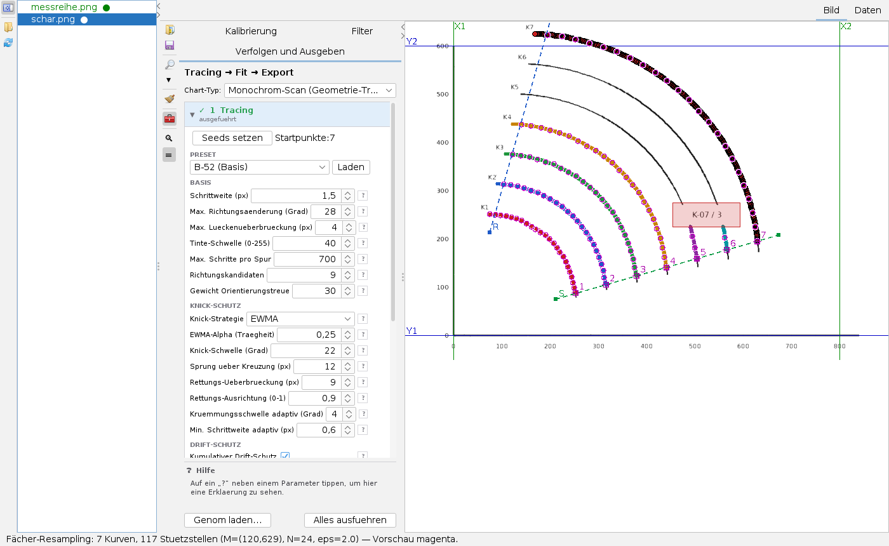
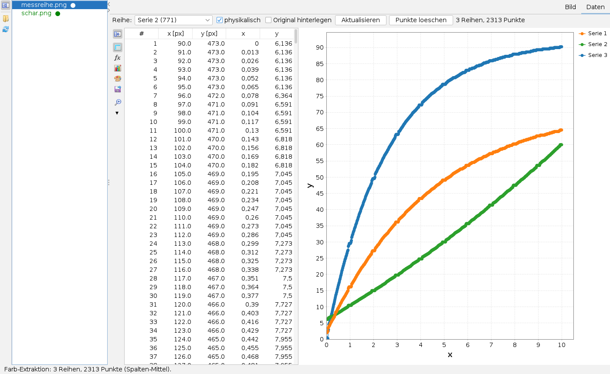
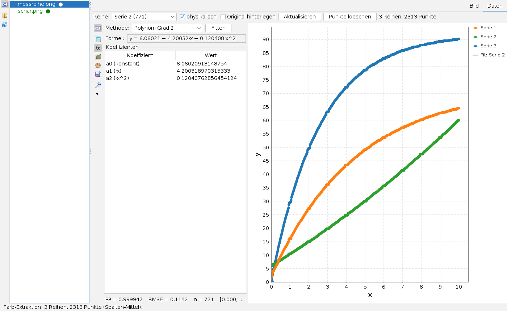

Image Digitizer bedienen
Bedienseite, Stand 06.10.2026. Wie man ein Diagrammbild lädt und kalibriert, ein Farbdiagramm über die Legende ausliest, einen gescannten Kurvenschar filtert und verfolgt, die Kurven auf ein gemeinsames Raster bringt, in der Datenansicht prüft, eine Formel anpasst und alles als Tabelle ausgibt. Die Bilder sind Bildschirmfotos der App mit zwei frei erfundenen Diagrammen: einem farbigen Liniendiagramm und einer gescannt wirkenden Kurvenschar auf Millimeterpapier.
Das Fenster
Die App öffnet man im Menü Anwendungen mit Image Digitizer öffnen… oder mit Alt+I; eine Bilddatei (PNG, JPEG, BMP, GIF) öffnet sie direkt.

- Verzeichnisleiste ganz links: Verzeichnisbaum ein- und ausklappen, Arbeitsverzeichnis wählen (der Tooltip nennt das aktuelle), Verzeichnis neu einlesen.
- Verzeichnisbaum: alle Bilder des Arbeitsverzeichnisses, rekursiv. Ein grüner Punkt ● zeigt, dass zu dem Bild schon eine Digitalisierung (
.digi.json) existiert. Ein Klick lädt das Bild. - Werkzeugleiste: Bild laden…, Digitalisierung speichern, Lupe ein/aus und ihr Faktor (▾), Alles zurücksetzen (Besen, mit Rückfrage, auf Wunsch samt Arbeitsdatei), Werkzeugkarten ein- und ausklappen, darunter die Karten Ansicht / Zoom und Filter & Trace.
- Werkzeugkarten: die drei Reiter für die Arbeitsschritte. Wechselt man rechts auf Daten, klappen sie ein; beim Zurückwechseln stehen sie wieder wie vorher.
- Statuszeile: Meldungen aller Aktionen; rechts die Lage unter dem Mauszeiger in Bildpunkten und, wenn kalibriert, in Achswerten.
Alle Mausmodi der Bildfläche – Kalibrierpunkte, Startpunkte, Sperrzonen, Legende, Fächerlinien, Pipette, Radiergummi – schließen einander aus. Wer einen einschaltet, schaltet die anderen ab.
Der Ablauf
- Bild laden (Werkzeugleiste oder Baum). Die App schlägt nach den Farben im Bild den Diagrammtyp vor: Farbchart oder Monochrom-Scan.
- Kalibrieren: je Achse zwei Bezugspunkte setzen und ihre Werte eintippen.
- Je nach Typ: Legende erfassen (Farbchart) oder Filter und Startpunkte setzen (Monochrom-Scan).
- Unter Verfolgen und Ausgeben extrahieren bzw. tracen, dann resampeln und fitten.
- Im Reiter Daten prüfen: Diagramm ansehen, Ausreißer löschen, auf Wunsch eine Formel anpassen.
- Exportieren und speichern: die Digitalisierung landet als
.digi.jsonneben dem Bild.
Kalibrieren

Je Achse gibt es eine Box mit Skala (linear oder logarithmisch) und zwei Bezugszeilen:
- Setzen X1 drücken, dann in das Bild klicken: die Stelle wird der erste Bezugspunkt der x-Achse, die Linie erscheint im Bild (grün für x, blau für y). Der Fokus springt ins Feld Wert.
- Den Achswert eintippen (Komma oder Punkt);
Enteroder ein Wechsel des Felds übernimmt. - Ebenso X2, Y1, Y2. Unten steht dann Kalibrierung vollständig; ✕ am Zeilenende löscht einen Bezugspunkt.
Die Kalibrierung macht drei Dinge möglich: Statuszeile und Datenansicht zeigen Achswerte, der Export der physikalischen Werte geht, und das Rechteck aus den Bezugspunkten begrenzt den Farbauszug auf die Zeichenfläche. Logarithmische Achsen werden logarithmisch umgerechnet.
- Auto-Kalibrierung (OCR) liest die Beschriftung unten und links mit dem mitgelieferten Ziffernmodell und trägt die äußersten lesbaren Werte als Vorschlag ein, nur wenn sie eine zur Lage passende Folge bilden. Datums- und Textachsen bekommen keinen Vorschlag. Den Vorschlag immer prüfen.
- Drehen (Karte Ansicht / Zoom) um 90° ist für die Zeit vor dem Kalibrieren gedacht: es setzt Kalibrierung, Reihen und Zonen zurück.
- Zusatzachsen (Reiseflug): für Reiseflugdiagramme eine zweite, nichtlineare Skala der Fluggeschwindigkeit an der Mach-Achse; mit Druckhöhe und OAT rechnet die App zu jedem Punkt Mach, CAS und wahre Fluggeschwindigkeit.
Legende und Sperrzonen
Region aufziehen markiert die Legende mit einem Rechteck (im Bild gestrichelt). Farben → Reihen erkennt die gesättigten Farben darin und legt je Farbe eine Reihe an. Die Legende selbst wird beim Farbauszug ausgespart, sonst kämen ihre Farbfelder als Punkte heraus.
Keep-out-Zonen sperren Bereiche für Verfolgung und Farbauszug, etwa Beschriftungen, Pfeile oder Stempel im Bild. Typ Rechteck: mit gedrückter Maustaste aufziehen; Polygon: Ecken klicken, Doppelklick schließt, Rechtsklick nimmt die letzte Ecke zurück. Neue Zone schaltet den Zeichenmodus ein; die Liste zeigt alle Zonen, die gewählte wird orange hervorgehoben. Eine Spur, die in eine Zone läuft, endet dort.
Farbdiagramm auslesen

Die Karte Verfolgen und Ausgeben führt in vier Stufen – 1 Tracing, 2 Resampling, 3 Fit, 4 Export –, jede aufklappbar und mit Haken, wenn sie gelaufen ist. Alles ausführen unten lässt alle nacheinander laufen. Oben wählt Chart-Typ zwischen Farbchart (Farb-Extraktion) und Monochrom-Scan (Geometrie-Tracing); ein in der Arbeitsdatei gespeicherter Typ hat Vorrang vor dem Vorschlag.
Im Farbchart sammelt Extrahieren ▶ je Reihenfarbe die Punkte, auf dem Originalbild, in der Zeichenfläche, ohne Legende und Sperrzonen:
| Einstellung | Bedeutung |
|---|---|
| Toleranz | Farbabstand je Kanal; 30 bis 60 sind üblich, höher nimmt mehr Kantenpixel mit. |
| Modus Spalten-Mittel (Linie) | ein Punkt je Bildspalte; Standard für Linien |
| Modus Alle Pixel | die rohe Punktwolke |
| Modus Marker-Zentren | ein Punkt je Symbol; Marker-Radius etwa die halbe Markergröße, Min. Pixel etwa 70 % der Kreisfläche |
Reihen gleicher Farbe kann der Farbauszug nicht trennen – dann auf Monochrom-Scan stellen und tracen. Verdeckte Marker fehlen im Ergebnis.
Einen Scan bereinigen

Die App unterscheidet das Arbeitsbild (auf der Bildfläche, von Filtern und Radiergummi verändert) vom Original (die Datei, unangetastet). Die Vorschau eines Schritts ändert nichts; Alles anwenden ersetzt das Arbeitsbild; Original stellt es wieder her. Die Verfolgung arbeitet auf dem Arbeitsbild, der Farbauszug immer auf dem Original.
- Oben wählt man eine Gruppe und einen Filter und fügt ihn mit + an die Kette an. Je Schritt: ▶ Vorschau bis hier, ▲ ▼ verschieben, ✕ entfernen. Darunter die Einstellungen des gewählten Schritts, mit ? für eine Erklärung im Hilfefeld.
- Gruppen: Frequenz-Zerlegung (Gitter- und Spitzenschicht, Kerbfilter gegen periodische Raster), Schwellwert (global, nach Helligkeit, adaptiv), Rauschen und Glättung (Median, bilateral, Perona-Malik, Entflecken), Morphologie (Öffnung, Top-Hat), Farbe (Farbe entfernen), Kontrast und Textur, Variational (Total Variation, MCA).
- Farbe entfernen nimmt eine Zielfarbe nach ihrem Farbton heraus, etwa ein grünes Raster; unbunte Kurven bleiben. Die Pipette holt die Farbe aus dem Bild. Invertiert behält nur die Zielfarbe.
- B-52-Preset laden setzt eine an einem gescannten Kurvenblatt bewährte Folge (Fourier, Helligkeit 150, Entflecken).
- Radiergummi: mit gedrückter Maustaste Pixel weiß übermalen, Größe 1 bis 60 Pixel, ein Schritt zurück. Er wirkt nur auf das Arbeitsbild.
Im Beispiel genügen BrightnessThreshold mit der Schwelle 150 – das hellgraue Raster fällt weg, die schwarzen Kurven bleiben – und Despeckle gegen den Scanstaub.
Kurven verfolgen

Im Monochrom-Scan verfolgt Tracen ▶ alle Kurven einer Schar zugleich. Die Spuren konkurrieren um die Pixel und überspringen einander nicht; die Verfolgung läuft im Hintergrund.
- Startpunkte: Seeds setzen schaltet den Klickmodus ein, ein Klick je Kurve auf ihren Anfang; der Zähler läuft mit. Ohne Startpunkte, aber mit einer Startlinie, sucht die App die Schnitte der Linie mit den Kurven selbst – im Bild die Punkte 1 bis 7. Beschriftungen auf der Linie vorher als Sperrzone markieren. Von Hand gesetzte Startpunkte haben Vorrang.
- Preset: gespeicherte Parametersätze, etwa aus der automatischen Suche, mit Laden; Genom laden… unten liest einen Satz aus einer Datei und setzt Filter und Verfolgung zugleich.
- Basis: Schrittweite, größte Richtungsänderung je Schritt, überbrückbare Lücke, Tinten-Schwelle, Schrittzahl.
- Knick-Schutz: Knick-Strategie EWMA (empfohlen) mittelt die Richtung und verhindert das Abbiegen auf kreuzende Linien.
- Drift-Schutz gegen schleichendes Abwandern auf Nachbarkurven, standardmäßig nur nach Kreuzungen; Erweitert: Dickenerkennung und Ausweichen an Engstellen.
Resampeln, fitten, exportieren

- 2 Resampling: Bogenlaenge glättet mit Douglas-Peucker (eps) und verteilt N Stützstellen auf ein gemeinsames Bogenlängenraster. Faecher schneidet die Kurven mit N Strahlen um einen Mittelpunkt M – für gefächerte Scharen; gleiche Strahlnummern gehören über die Schar zusammen.
- Fächerlinien (Knöpfe Start, Referenz und Ende in der Stufe 2, je Linie zwei Klicks ins Bild, Rechtsklick bricht ab): M ist der Schnittpunkt der verlängerten Start- und Referenzlinie, die Endlinie ist freiwillig. Schneiden sich die Linien nicht sinnvoll, meldet es die Statuszeile, und die App weicht auf die Bogenlänge aus.
- 3 Fit: parametrischer Spline x(t), y(t) über die Bogenlänge, robust an Scheiteln und senkrechten Stücken, oder polar r(φ) um M (braucht das Fächer-Resampling). Die Vorschau erscheint cyan. Diese Fits beschreiben die Form in Bildpunkten; Formeln mit Koeffizienten gibt es in der Datenansicht.
- 4 Export schreibt neben das Bild:
<bild>_raw.csv(alle Punkte je Spur),_fan.csv(Stützstellen mit Strahlnummer),_phys.csv(alle Reihen in Achswerten, braucht die Kalibrierung) und_ablesung.csv(Schnittpunkte jeder Kurve mit gewählten Querlinien und ein Kurvenwert je Kurve aus Anfangswert und Schritt).
Die Datenansicht

Der Reiter Daten zeigt die Reihen als Diagramm mit einer Seitenleiste daneben. Kopfzeile: Reihe wählt die Reihe für Tabelle und Fit; physikalisch zeigt Achswerte statt Bildpunkte (sonst steht die y-Achse wie im Bild auf dem Kopf); Original hinterlegen legt das Bild hinter das Diagramm; Aktualisieren baut neu auf; Punkte loeschen entfernt die in der Tabelle markierten Zeilen, Bild und Diagramm ziehen sofort nach.
Die Seitenleiste hat die Karten Tabelle, Datenfit, Chart-Optionen (dieselben Karten wie in der Diagramm-App), Serien-Stil und Daten-Export; dazu eine Lupe.

Datenfit liefert eine Formel y(x) für die gewählte Reihe, im angezeigten Einheitenraum – für brauchbare Formeln also physikalisch einschalten. Methode: linear, Polynom Grad 2 bis 8, exponentiell a·e^(b·x), logarithmisch a + b·ln(x) oder Potenz a·x^b. Fitten rechnet; Ergebnis sind die kopierbare Formel, die Koeffizienten, R², RMSE, die Punktzahl und der Gültigkeitsbereich. im Chart anzeigen zeichnet die Fit-Kurve dazu. Ein weiteres Kästchen fittet alle Reihen mit derselben Methode und zeigt sie in Reitern.
Was gespeichert wird
- Digitalisierung speichern (Werkzeugleiste) legt
<bild>.digi.jsonneben das Bild: Kalibrierung mit Zusatzachsen, alle Reihen, Sperrzonen, Diagrammtyp, Legende, Fächerlinien, Drehung, Zoom und die Werkzeugeinstellungen. Beim Laden des Bilds kommt sie automatisch mit; beim Wechsel des Bilds und beim Schließen sichert die App selbst. Eine beschädigte Datei wird mit Dateiname und Grund abgewiesen. - Als App merkt sich der Digitizer im Arbeitsstand das Verzeichnis und das aktuelle Bild.
- Die CSV-Dateien entstehen nur über Export ▶ bzw. die Karte Daten-Export.
Tastatur und Maus
Alt+I öffnet die App. Auf der Bildfläche hängt die Wirkung eines Klicks vom eingeschalteten Modus ab; ohne Modus wird nur die Lage angezeigt. Die Lupe vergrößert die Umgebung des Mauszeigers. Im Diagramm der Datenansicht zoomt das Mausrad.
Grenzen
- Filter und automatische Suche wurden an einem gescannten Kurvenblatt entwickelt; ob die Einstellungen auf andere Blätter passen, ist nicht belegt.
- Die Verfolgung von Querlinien und ein Kürzeste-Wege-Verfahren für Sonderkurven sind als Bausteine da, aber nicht in der Oberfläche.
- Einzelne Punkte von Hand anklicken und Legendeneinträge benennen geht noch nicht.
Was die App kann und worauf sie aufbaut, steht in der Übersicht.